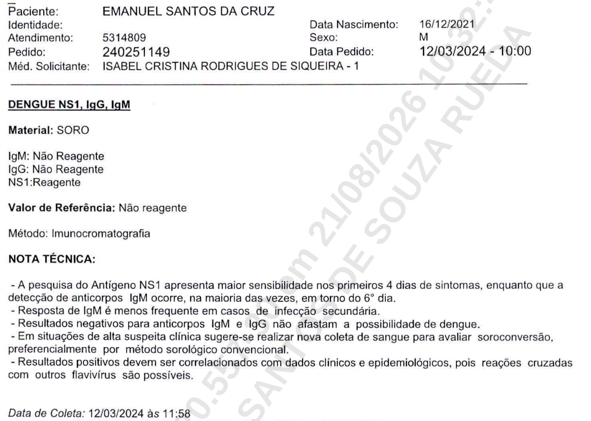
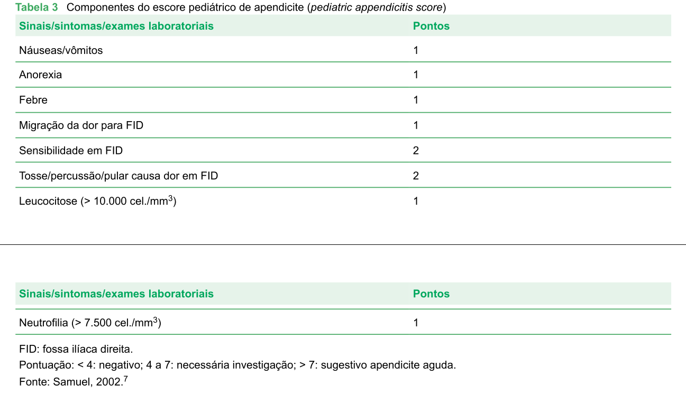

Preâmbulo
Dr. Jefferson Torres da Silva, CRM-DF 33.612, médico, perito cadastrado no Tribunal de Justiça do Distrito Federal e Territórios, trazido aos autos na condição de assistente técnico da defesa de Marcelo de Souza Furtado constituída pelo seu defensor Igor Henrique Santos de Souza Rueda, conhece deste processo 0704932-45.2024.8.07.0012 que trata de questão cível com cerne no diagnóstico oportuno de moléstia sofrida pelo coautor Emanuel Santos da Cruz, sexo masculino, menor, com 3 anos de idade incompletos na data do ocorrido, neste parecer tratado doravante como paciente.
Tendo em vista o caráter deducendi desta perícia e valorizando o digno tempo do magistrado e das respeitosas partes, este parecer poupa-se da qualificação dos elementos e da discussão, bem como do uso excessivo de instrumentos meramente didáticos, analizando diretamente quesitos interpostos à primeira perita no processo e que foram redirigidos a mim pelo defensor do corréu em tela.
Respostas aos quesitos
1. O prontuário médico e os documentos apresentados nos autos permitem afirmar, com base na literatura médica e nas evidências do caso, que o 1º coautor já apresentava sinais sugestivos de apendicite aguda nos atendimentos realizados no Hospital Brasiliense? Em caso positivo, quais eram esses sinais?
No atendimento realizado em 10/03/2024, conforme os registros apresentados, o paciente não apresentava sinais clínicos suficientemente sugestivos de apendicite aguda que permitissem estabelecer, naquele momento, essa hipótese diagnóstica como prioritária.
Constavam febre, vômitos e diarreia, porém não há registro, nesse atendimento, de dor abdominal com características sugestivas de apendicite: dor localizada em fossa ilíaca direita, migração da dor, defesa ou descompressão dolorosa. Na verdade, os laudos periciais anteriormente trazidos ao processo também desconhecem que, neste primeiro momento no nosocômio questionado, havia sequer um quadro de abdome agudo. Explico: trata-se de entidade clássica médica a síndrome dolorosa abdominal que, quando repentinas, são chamadas abdome agudo por demandarem imediata abordagem. Podem recair em subclassificações utilizadas pela medicina para auxílio de rápida intervenção, como inflamatório, perfurativo, obstrutivo, vascular e hemorrágico. É básico de qualquer médico reconhecer os estados de abdome agudo, principalmente a apendicite, o mais comum dos exemplos, e seu registro em prontuário normalmente elencaria:
- Defesa do abdome ao exame, com o paciente antecipando, evitando ou até mesmo retirando-se das manobras do examinador;
- Clássico sinal de compreensão indolor e descompressão dolorosa da fossa ilíaca; e
- Má localização inicial da dor e progressiva migração ao sítio do flanco e fossa abdominal à direita.
Nenhum desses sinais ou sintomas foram registrados em prontuários nem alegados pelas perícias prévias.
Portanto, descarta-se, categoricamente, o abdome agudo naquele momento e, por consequência, o paciente não apresentava sinais sugestivos de apendicite no momento interrogado pelo quesito. 12
2. Os sintomas relatados e registrados nos atendimentos (febre, vômitos, diarreia, dor abdominal, distensão abdominal, convulsão febril, entre outros) justificariam, segundo as boas práticas médicas e protocolos assistenciais, a realização de exames de imagem (ultrassonografia, tomografia ou raio-X abdominal) para investigação de apendicite?
Os sintomas descritos podem integrar o diagnóstico diferencial de diversas doenças infecciosas e gastrointestinais, inclusive apendicite. Contudo, inexiste na literatura médica a indicação de exame de imagem automaticamente pela presença isolada de febre, vômitos ou diarreia. O médico é um profissional que opera essencialmente por base estatística das doenças e deve elaborar um diagnóstico somando elementos sintomáticos e sinalépticos do paciente, bem como utilizar-se da epidemiologia local para valorar ou desvalorar as hipóteses.
Nas crianças com suspeita clínica de apendicite, a ultrassonografia é uma modalidade de imagem frequentemente utilizada quando a avaliação clínica não é suficiente. Seu pedido, quando diante de real apendicite clinicamente sugestiva, pode, na verdade, retardar o tratamento3. A tomografia não deve ser utilizada indiscriminadamente, particularmente em crianças, em razão da exposição à radiação.4 A radiografia simples de abdome, por sua vez, possui papel limitado na investigação específica de apendicite, com o raríssimo sinal de apagamento do psoas, elemento histórico e arcaico já não mais cultivado na ciência médica.5
No atendimento de 10/03/2024, segundo o prontuário apresentado, predominavam febre, vômitos e diarreia, sem registro de quadro de dor abdominal. Seria, na verdade, incoerente solicitar exames de imagem.
Dada a epidemiologia típica do centro-oeste brasileiro, suspeitar de arboviroses era essencial e assim o fez o médico no dia 10/03/24, Dr. Marcelo, ao solicitar testagem para Dengue. Tão embasado estava que em 12/03/24 o paciente realiza novo teste contra o antígeno NS1 de alta sensibilidade que retorna positivo, conforme consta dos autos e reproduzo a seguir.

Ergo, no atendimento realizado dia 10/03/24 não há razões que impusessem a realização de exame de imagem para investigação de apendicite. Ademais, cabe ressaltar que o Dr. Marcelo acerta em sua hipótese diagnóstica, esta sim, a única corroborada laboratorialmente por teste de alta sensibilidade, como acima demonstrado.
3. A conduta adotada pelos médicos responsáveis pelo atendimento do 1º coautor (prescrição de sintomáticos, antibióticos, alta hospitalar) foi adequada diante do quadro clínico apresentado? Houve omissão, imprudência, imperícia ou negligência no acompanhamento e na investigação diagnóstica?
Considerando os elementos registrados no prontuário, a conduta adotada no atendimento de 10/03/2024 mostrou-se compatível com o quadro clínico então documentado.
A avaliação médica deve ser realizada de acordo com os dados disponíveis no momento do atendimento, e não à luz do diagnóstico posteriormente estabelecido. Naquele momento, estavam registrados febre, vômitos e diarreia, sem documentação de sinais clínicos característicos de apendicite. A alta, acompanhada de tratamento sintomático e orientação quanto à evolução clínica e ao retorno diante de persistência ou agravamento, é compatível com uma abordagem prudente quando não há elementos suficientes para caracterizar abdome cirúrgico.1
A posterior confirmação de apendicite não permite, por si só, concluir que o diagnóstico deveria necessariamente ter sido realizado no atendimento anterior.
Quanto aos conceitos médico-legais, não se identificam, nos elementos aqui analisados, dados objetivos suficientes para caracterizar negligência, imprudência ou imperícia. A existência de diagnóstico diferencial posteriormente não confirmado ou de diagnóstico final diferente daquele inicialmente considerado não constitui, isoladamente, prova de erro profissional.
4. A ausência de exames complementares de imagem e/ou a alta hospitalar precoce contribuíram para o agravamento do quadro clínico do 1º coautor, culminando em apendicite complicada e sepse abdominal?
Não é possível estabelecer, com base nos elementos apresentados, relação causal direta entre a ausência de exame de imagem ou a alta hospitalar e a posterior evolução para apendicite complicada.
A apendicite apresenta evolução variável e pode inicialmente manifestar-se de forma inespecífica, particularmente na população pediátrica. Embora o diagnóstico oportuno reduza o risco de complicações, não é possível realizar, retrospectivamente, a afirmação contrafactual de que a realização de determinado exame em 10/03/2024 necessariamente teria identificado a doença e evitado sua progressão16. Tal fato é tão verdade que há, em inúmeros casos, exames tanto de imagem quanto laboratoriais totalmente dentro da normalidade em apendicites clássicas. Uma coorte de qualidade foi realizada nos Países Baixos revelando que cerca de 2% dos pacientes com exames laboratoriais normais evoluíram com apendicite e não puderam descartar essa possibilidade inclusive para os casos de apendicite dita complicada7.
Além disso, a presença posterior de apendicite complicada demonstra a condição encontrada posteriormente, mas não permite determinar, isoladamente, em que momento o processo inflamatório apendicular se tornou clinicamente detectável nem se a evolução teria sido modificada pela realização de exame de imagem naquele atendimento específico. A extrapolação temporal na medicina raramente é precisa o suficiente para afirmações categóricas.
Existem meta-análises que mostram poderosos valores preditivos de apendicite quando existe combinação de vários exames mas estes mesmos estudos ressaltam a impossibilidade iniciar o algoritmo decisivo sem dor abdominal como norte8. Isto é, não faz sentido a suspeita de apendicite sem dor abdominal característica.
Portanto, não há elementos suficientes para afirmar nexo causal médico entre a ausência de imagem/alta hospitalar e a evolução posterior da doença.
5. O diagnóstico precoce e o tratamento adequado da apendicite poderiam ter evitado a evolução para o quadro grave (supuração, sepse, necessidade de cirurgia de emergência e cicatriz extensa)?
De modo geral, o diagnóstico e o tratamento oportunos da apendicite estão associados à redução do risco de perfuração e outras complicações. Entretanto, não é possível afirmar, especificamente neste caso, que um diagnóstico realizado em momento anterior teria necessariamente evitado a supuração ou modificado o desfecho.16
A evolução para apendicite complicada depende de múltiplos fatores relacionados à própria doença, ao portador e ao seu tempo de evolução. A literatura realmente reconhece que a apresentação pediátrica pode ser atípica e que o diagnóstico tardio está associado a maior frequência de perfuração,1 mas também há estudos que reputam responsabilidade ao diagnóstico precoce tanto ao médico como ao paciente, tendo em vista justamente quadros como o ilustrado, atípicos9, de evolução inesperada. Porém, a população pediátrica não opera por relatos claros, sempre fidedignos ou precisos e é próprio da especialidade trabalhar com informações menos colaborativas.
Quanto à cicatriz, sua existência decorre do tratamento cirúrgico realizado. A extensão da incisão está relacionada à necessidade de acesso adequado à cavidade abdominal e às condições encontradas durante o procedimento, especialmente nos casos complicados. Assim, não é possível atribuir a extensão da cicatriz, isoladamente, a uma suposta demora diagnóstica. Mesmo a abordagem de apendicite feita no momento mais breve possível cursará com cicatriz cirúrgica, própria do tratamento.
Por fim, mesmo que houvesse dano cicatricial de qualquer ordem, esta teria de ser demonstrada por perícia do ato cirúrgico, o que não é objeto de análise desta perícia.
No caso concreto, também deve ser distinguida a ocorrência de apendicite supurada da ocorrência de sepse. Conforme os elementos apresentados para análise, houve apendicite supurada, mas não há elementos suficientes, nesta documentação, para afirmar que tenha ocorrido sepse, uma entidade essencialmente de critérios estabelecidos e revisados por comunidades internacionais 10. Esclareço: a sepse só se comprovaria por, no mínimo, fidedigna descrição de quadro de choque, altos marcadores inflamatórios, gasometria arterial tendente à acidemia e evolução com prolongada antibioticoterapia.
6. A cicatriz resultante da cirurgia realizada no 1º coautor é compatível com o procedimento de emergência para apendicite complicada? Trata-se de sequela permanente? Há outros danos estéticos ou funcionais decorrentes do episódio?
Vide quesito 5.
Adedum
A cicatriz descrita e apresentada é compatível com uma incisão utilizada para apendicectomia, particularmente a incisão de McBurney. A via de acesso depende das condições clínicas, anatômicas e operatórias encontradas, bem como da técnica empregada1.
A cicatriz cutânea decorrente de procedimento cirúrgico constitui alteração anatômica permanente, embora seu aspecto possa sofrer modificações ao longo do processo de maturação cicatricial.
Com base exclusivamente na descrição e nas fotografias apresentadas, não foram identificados elementos que permitam caracterizar cicatriz queloidiana, deformidade cicatricial importante ou prejuízo funcional decorrente da cicatriz. A avaliação definitiva de dano estético, entretanto, deve considerar exame presencial, localização, dimensões, relevo, coloração, mobilidade e repercussão funcional do tecido subjacente.
Há de se reiterar que a técnica cirúrgica não é objeto desta perícia.
7. O atendimento prestado no Hospital Brasiliense seguiu os protocolos médicos e as diretrizes da medicina baseada em evidências para casos de abdome agudo em crianças?
Considerando especificamente o atendimento de 10/03/2024 e os dados registrados no prontuário, não se encontrava documentado quadro clínico característico de abdome agudo inflamatório ou de apendicite que impusesse, naquele momento, investigação específica por imagem ou tratamento cirúrgico.
A medicina baseada em evidências recomenda que a investigação da apendicite pediátrica seja orientada pela combinação da história clínica, exame físico, exames laboratoriais e, quando indicada pela probabilidade clínica, exames de imagem. Não existe recomendação de realização indiscriminada de exames de imagem em toda criança com febre, vômitos ou diarreia.4
No Brasil, se levarmos em conta a posição oficial bibliográfica da Sociedade Brasileira de Pediatria, o quadro-score de suspeita para apendicite nem mesmo leva em conta exames de imagens e, como ressaltado anteriormente, atribui maior valor a sensibilidade abdominal clássica do quadro, o chamado abdome defeso11:

Dessa forma, não foram identificados, nos elementos analisados, dados suficientes para caracterizar desvio das boas práticas médicas no atendimento em questão.
8. Há elementos nos autos que permitam afirmar que o sofrimento físico e psíquico do 1º coautor e de sua genitora (2ª coautora) decorreu da evolução do quadro clínico em razão da conduta médica adotada?
A evolução de uma doença pode produzir sofrimento físico e repercussões emocionais tanto no paciente quanto em seus familiares. Contudo, a existência desse sofrimento não permite, por si só, estabelecer que tenha sido causado por conduta médica inadequada.
No caso analisado, os elementos apresentados não permitem estabelecer nexo causal entre o sofrimento relatado e uma conduta médica caracterizada como negligente, imprudente ou imperita.
A posterior identificação de apendicite complicada também não permite concluir que sua evolução tenha sido determinada pelo atendimento médico anterior. Para essa conclusão seria necessário demonstrar que houve conduta médica inadequada e que essa conduta apresentou relação causal suficientemente estabelecida com o resultado. O discorrer deste laudo deducendi não encontrou prática médica incoerente ou notoriamente errada para subsidiar a identificação de momento pontual da origem do sofrimento. Este parece decorrer mais do próprio processo de adoecimento do que do cuidado recebido.
Os autos narram um caso atípico de apendicite desvendada fora do seu momento tenro. Sua marcha temporal e sintomática diferenciada não são elementos de prova e sim notas epidemiológicas, isto é, estatística alheia à forma mais comum de apresentação da moléstia. Isto, per si, não é conjunto probatório das condutas e a aludida culpa recai sobre o infortúnio de uma apendicite que superou antibiótico prévio, cursou sem ser aguda e escapou da suspeita diagnóstica pela ausência de dor abdominal. Normalmente, neste caso, a perícia da peça cirúrgica poderia revelar patógenos raros, bactérias conhecidamente resistentes, apêndice de anatomia interna extravagante9 etc.
Portanto, sob o ponto de vista médico-pericial, não há elementos suficientes para afirmar que o sofrimento físico ou psíquico decorreu de falha na conduta médica adotada no atendimento analisado.
9. Deseja a perita acrescentar alguma observação técnica relevante para o esclarecimento do Juízo?
Nada há a acrescentar sob o ponto de vista médico-pericial, no momento.
Brasília, 26 de agosto de 2026.
CRM-DF 33.612
Dr. Jefferson T.
-
Di Saverio S, Podda M, De Simone B, et al. Diagnosis and treatment of acute appendicitis: 2020 update of the WSES Jerusalem guidelines. World Journal of Emergency Surgery. 2020;15:27. doi:10.1186/s13017-020-00306-3. ↩︎ ↩︎ ↩︎ ↩︎ ↩︎ ↩︎
-
Kulik DM, Uleryk E, Maguire JL. Does this child have appendicitis? A systematic review of clinical prediction rules for children with acute abdominal pain. Journal of Clinical Epidemiology. 2013;66(1):95-104. doi:10.1016/j.jclinepi.2012.09.004. ↩︎
-
PAULSON, Erik K.; KALADY, Matthew F.; PAPPAS, Theodore N. Suspected appendicitis. New England Journal of Medicine, v. 348, n. 3, p. 236-242, 2003. ↩︎
-
American College of Radiology. ACR Appropriateness Criteria®: Suspected Appendicitis—Child. American College of Radiology. ↩︎ ↩︎
-
Becker C, Kharbanda A. Acute appendicitis in pediatric patients: an evidence-based review. Pediatric Emergency Medicine Practice. 2019;16(9). ↩︎
-
Kim DY, et al. Diagnostic accuracy of history, physical examination, laboratory tests, and point-of-care ultrasound for pediatric acute appendicitis in the emergency department: a systematic review and meta-analysis. Academic Emergency Medicine. 2017. ↩︎ ↩︎
-
de Jonge J, Scheijmans JCG, van Rossem CC, van Geloven AAW, Boermeester MA, Bemelman WA; Snapshot Appendicitis Collaborative Study group. Normal inflammatory markers and acute appendicitis: a national multicentre prospective cohort analysis. Int J Colorectal Dis. 2021 Jul;36(7):1507-1513. doi: 10.1007/s00384-021-03933-7. Epub 2021 Apr 27. PMID: 33907858; PMCID: PMC8195794. ↩︎
-
R E B Andersson, Meta-analysis of the clinical and laboratory diagnosis of appendicitis, British Journal of Surgery, Volume 91, Issue 1, January 2004, Pages 28–37, https://doi.org/10.1002/bjs.4464 ↩︎
-
GUIDRY, Scott P.; POOLE, Galen V. The anatomy of appendicitis. The American surgeon, v. 60, n. 1, p. 68-71, 1994. ↩︎ ↩︎
-
DELLINGER, R. Phillip et al. Surviving sepsis campaign. Critical care medicine, v. 51, n. 4, p. 431-444, 2023. ↩︎
-
SOCIEDADE BRASILEIRA DE PEDIATRIA. Tratado de pediatria. 6. ed. Barueri, SP: Manole, 2025. ↩︎